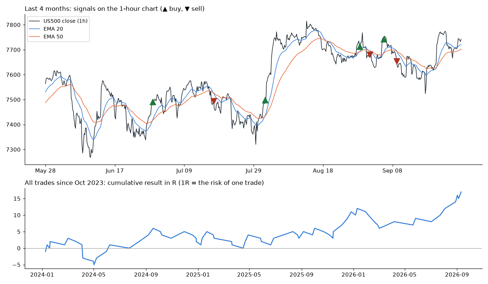

US500 signals to Telegram: engine + backtest
One signal function runs both the backtest and the live bot, so what you test is exactly what sends alerts. The rules here are an example (EMA 20/50 cross + RSI filter, stop 1.5 ATR, target 3 ATR) to show the machinery; your own rules replace them.

Backtest on 5,082 hourly bars (2023-10-27 to 2026-09-25)
| Trades | Winners | Average per trade | Total | Worst drawdown | |
|---|---|---|---|---|---|
| Whole period | 73 | 41.1% | +0.23 R | +17.0 R | 8.0 R |
| Last 6 months | 10 | 70.0% | +1.10 R | +11.0 R | 1.0 R |
R = the amount risked on one trade (entry to stop). Winners are fewer than losers but earn 2R each, which is why the average is positive. 10 trades in 6 months is too few to judge a strategy; this is a demonstration of the engine, not trading advice.
Honest backtest rules
- Signals use only closed bars; the entry fills at the next bar's open.
- If the stop and the target are both touched inside the same hour, the stop is counted first.
- Every trade is saved with its signal time, entry, stop, target, exit and result, for review.
What the Telegram alerts look like
🔴 SELL US500 (1h)
Entry ≈ 7,680.86
Stop: 7,710.73
Target: 7,621.11
Signal bar closed: 2026-08-31 13:30 ET
Rule: EMA20/50 cross + RSI filter
Entry ≈ 7,680.86
Stop: 7,710.73
Target: 7,621.11
Signal bar closed: 2026-08-31 13:30 ET
Rule: EMA20/50 cross + RSI filter
🟢 BUY US500 (1h)
Entry ≈ 7,742.62
Stop: 7,710.93
Target: 7,806.00
Signal bar closed: 2026-09-03 12:30 ET
Rule: EMA20/50 cross + RSI filter
Entry ≈ 7,742.62
Stop: 7,710.93
Target: 7,806.00
Signal bar closed: 2026-09-03 12:30 ET
Rule: EMA20/50 cross + RSI filter
🔴 SELL US500 (1h)
Entry ≈ 7,654.42
Stop: 7,682.64
Target: 7,597.98
Signal bar closed: 2026-09-09 09:30 ET
Rule: EMA20/50 cross + RSI filter
Entry ≈ 7,654.42
Stop: 7,682.64
Target: 7,597.98
Signal bar closed: 2026-09-09 09:30 ET
Rule: EMA20/50 cross + RSI filter
How the live bot is built
- Feed: real-time US500 bars from your broker or data provider, with reconnects and a check for missing bars.
- Engine: the same signal function as the backtest, run when each bar closes.
- Telegram: Bot API messages; each signal has an id saved to disk, so a restart never sends duplicates or skips one.
- Operations: runs 24/5 on a small cloud server, logs every decision, and alerts you if the feed or the bot stops.
Data: Yahoo Finance hourly S&P 500 index (^GSPC), used for this demo only; a live bot needs a real-time source. Python, pandas.